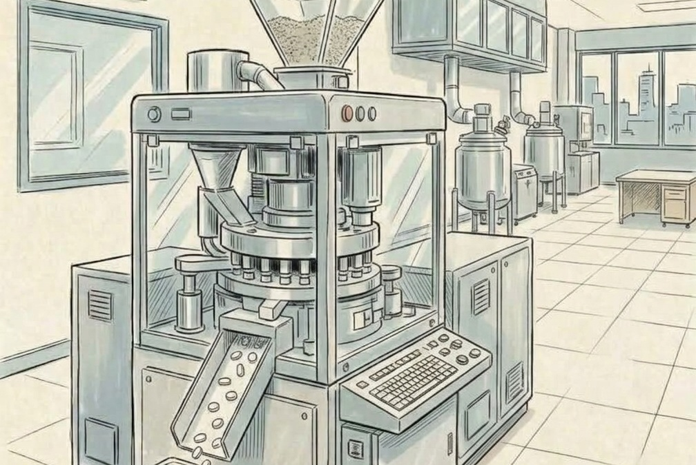
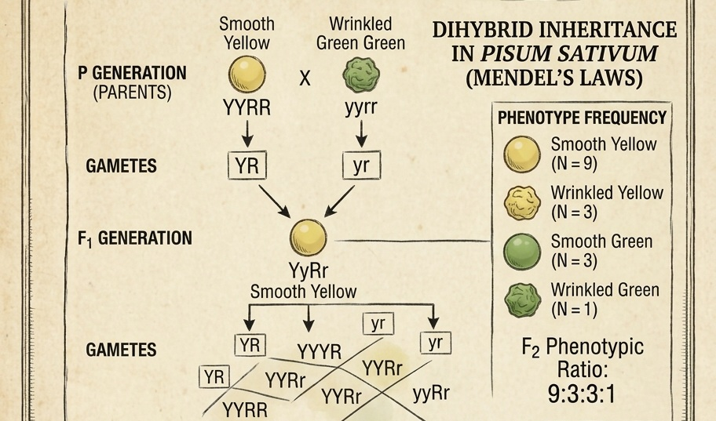

Even if measurement were perfect, a sample is only part of the population.
Population: the full set/process we want to learn about.
Sample: the subset of observations we actually collect.
Why not measure everyone?
Feasibility and ethics
Cost
full measurement may be unrealistic
Time
evidence is needed before forever
Destructive tests
some measurements consume the sample
Ethics
avoid unnecessary exposure or risk
Infinite process
sometimes population means all possible outcomes
Good sampling lets us learn enough without measuring everything.
Population can be conceptual
Not always a literal list of people
Clinical population
patients who could receive a therapy
Manufacturing process
all tablets this process could produce

Idealized population
e.g., very large population assumption in Hardy–Weinberg reasoning

A population often means the data-generating process behind the observations.
A sample statistic changes from sample to sample
Same population, different samples
\(\bar x_1=7.8\)
\(\bar x_2=8.4\)
\(\bar x_3=8.0\)
A statistic is itself a random quantity before the sample is observed.
Sampling distribution
The central object of Week 5
A sampling distribution is the distribution of a statistic across repeated samples from the same population.
population
→
sample 1
→
\(\bar X_1\)
sample 2
→
\(\bar X_2\)
sample 3
→
\(\bar X_3\)
⋮
⋮
Two laws make repeated sampling well behaved
The big picture
Law of Large Numbers
Where does the estimate go?
running averages stabilize near the expectation
Central Limit Theorem
How does the estimate vary?
sample means acquire a predictable shape
Law of Large Numbers
Intuition
As independent observations accumulate, sample averages tend to stabilize near the population expectation.
The individual observations remain variable. The running statistic becomes more stable.
Try it: LLN for a binary outcome
Interactive running proportion
current p0.30
The running proportion can jump early, but tends to settle near the true probability.
Try it: LLN for continuous measurements
Interactive running mean
σ fixed2.0
More observations stabilize the mean, not the raw measurements themselves.
What LLN does not say
Common misconception
“After enough measurements, individual observations stop being noisy.”
False. Individual observations remain variable. Sample averages become more stable.
\(X_i\) patient-to-patient variation
\(\bar X_n\) estimate-to-estimate variation
Now ask a different question
From LLN to CLT
LLN
Where does the average go as observations accumulate?
CLT
What does the distribution of sample averages look like?
Central Limit Theorem: The population shape can be skewed, discrete or bounded — yet the distribution of sample means often becomes approximately Gaussian.
Try it: CLT sampling laboratory
Interactive sampling distribution
source population
sampling distribution of means
Change \(n\). The means become more bell-shaped and more tightly concentrated.
Increase n: two things happen
Shape and width
Shape
under common conditions, the sampling distribution of \(\bar X\) approaches a Normal shape
Width
the distribution becomes narrower as sample size grows
The sample mean itself is not Student-\(t\). The standardized statistic involving \(S\) follows a \(t\) distribution under Normal-population assumptions.